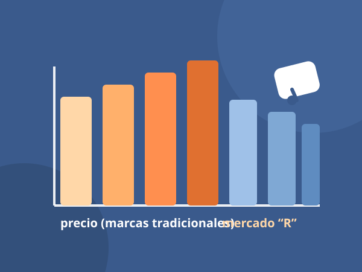

Novedades › El mercado de la moto en España
Novedades · Análisis de mercado
El mercado de la moto en España: menos novedades, precios al alza y un futuro que llega de China
Las marcas tradicionales suben precios de compra y de mantenimiento a la vez que recortan prestaciones y tardan cada vez más en estrenar motos. El segmento deportivo “R” se hunde, las ruteras aguantan y el futuro se dibuja como una reinvención de conceptos ya conocidos que llega desde China a menor coste, con las eléctricas asomando en la movilidad urbana e interurbana.

La realidad en una frase
Si miramos el catálogo de 2026 con ojo crítico, el panorama español se resume así: las novedades reales escasean, lo que se presenta son mayoritariamente actualizaciones de modelos ya existentes (a menudo con más precio y menos equipamiento que sus antecesoras); las marcas tradicionales empujan el precio al alza tanto en la compra como en las revisiones; el consumidor pierde prestaciones modelo a modelo; el segmento deportivo “R” cae en picado; y el hueco lo están llenando las marcas chinas, que reinvierten conceptos ya maduros a un coste mucho menor, mientras las eléctricas empiezan a ganar terreno en la movilidad urbana e interurbana.
Escasez de novedades reales
Los ciclos de vida de los modelos se han alargado hasta los 5-7 años y las “novedades” de cada EICMA son, en su mayoría, restylings, versiones especiales y cambios de coloración. Las derivadas de plataformas compartidas (mismo motor, mismo chasis, distinta carrocería) se han convertido en la regla para contener costes de homologación. Euro 5+ encareció cada lanzamiento y ninguna marca quiere asumir el riesgo de un modelo completamente nuevo sin mercado asegurado.
Ese terreno lo están copando las marcas asiáticas más ágiles: donde Honda, Yamaha o BMW titubean, Voge, Zontes o las marcas del grupo CFMoto/Changan lanzan en meses proyectos que las tradicionales llevarían años madurando. Ya lo vimos con la Voge SR450X o la Zontes 552H: conceptos conocidos, pero recién estrenados y con un precio que las grandes no pueden igualar.
Precios al alza en compra y mantenimiento
La subida de precio no es solo una sensación: la presión de los seguros, la financiación y las materias primas ha desplazado los PVPR hacia arriba de forma sostenida. Un scooter medio de marca tradicional que hace una década se movía en la banda de los 4.500-5.500 € ahora roza o supera los 6.500-7.000 €. Y lo que duele más es el coste de mantenimiento: la mano de obra de taller sube por hora, las piezas originales se encarecen y los intervalos de revisión no acortan.
| Honda ADV350 | ≈ 6.790 € (monocilíndrico de 29,4 CV) |
| BMW C 400 X | ≈ 7.960 € |
| Voge SR450X | ≈ 6.288 € (bicilíndrico de 42 CV, mejor equipado) |
| Zontes 368G ETC | ≈ 5.592 € |
Cifras orientativas de tarifas de catálogo; las promociones y la financiación cambian el precio final. En cualquier caso, la tendencia es la misma: las marcas asentadas se mueven hacia arriba y las emergentes tiran hacia abajo.
El resultado es doble: el que cambia de moto asume cada vez más coste, y el que la mantiene ve cómo las revisiones y recambios de marca tradicional pesan cada vez más en el presupuesto anual. Es una presión que empuja a muchos usuarios hacia marcas con garantías largas (Voge ofrece 5 años) y precios de recambio más contenidos.
La pérdida de prestaciones
Precio al alza y prestaciones a la baja. La carrera por las emisiones ha recortado potencia y par en varios modelos, y la obsesión por el peso en las fichas ha traído motores más pequeños donde antes había más cilindrada. A esto se suma el recorte de equipamiento de serie: muchas funciones pasan a pago (conectividad, modos de conducción, accesorios) y la electrónica, antes de serie, ahora se segmenta en versiones.
No es solo una impresión: la densidad de potencia por euro es peor hoy que hace una década en la mayoría de marcas tradicionales. En la práctica, el motero acaba pagando más por una moto que entrega menos que su predecesora, compensando con electrónica que en buena parte se podría haber dejado de cobrar aparte.
La caída del mercado “R”
El segmento deportivo puro (“R”) es el gran perdedor de la última década. Las deportivas de 600 y 1000 cc de carnet pleno, antes la columna vertebral del catálogo de marcas japonesas, llevan años en caída libre de matriculaciones. La oferta se ha adelgazado hasta el punto de que varias R históricas han desaparecido de los catálogos europeos y las que quedan se mantienen casi por inercia de imagen.
Las causas son conocidas: posición de conducción poco práctica, precios elevados en relación con el uso real, seguros prohibitivos para los más jóvenes y una cultura que ha girado hacia la aventura, el scooter y la moto polivalente. El carnet A2 también ha tenido mucho que ver: al limitar a 35 kW, casi toda la gama deportiva queda fuera y el marketing se ha desplazado a las naked y las trail de media cilindrada que sí pueden disfrutarse con ese permiso.
El futuro: reinvención desde China a menor coste
La gran lectura de 2026 es que el futuro no pasa por inventar conceptos nuevos, sino por reinvendar baratos los que ya funcionan. Las marcas chinas lo han entendido a la perfección: toman plataformas maduras (maxiscooters, trails medias, modern classics, naked A2), las optimizan en coste y las sirven con un equipamiento generoso y un precio imposible de igualar para las tradicionales.
Lo vemos en el maxiscooter (Voge, Zontes, QJ Motor), en el modern classic (CMS/Changan construyendo la CB450 de la ciudad, las replicas clásicas de las marcas emergentes) y en las trail medias. Y lo recalca el propio sector tradicional: Honda fabrica su nueva 500 monocilíndrica en India para poder competir en coste — si no se puede batir a China en precio, se fabrica donde China fabrica.
La duda que queda abierta es la depreciación y el servicio postventa: la garantía larga de las emergentes no garantiza una red de talleres ni unos plazos de piezas comparables a los de las marcas asentadas. La compra puede ser barata; el mantenimiento fuera de garantía, una incógnita.
La resistencia de las ruteras de las marcas asentadas
Frente al hundimiento de las R, las ruteras y las trail de gran turismo de las marcas ya asentadas (BMW, Honda, Ducati, Triumph...) aguantan el tipo y siguen siendo el terreno donde las tradicionales marcan diferencias. Ahí el precio no se discute de la misma forma: el comprador busca red, garantía, reventa y una red de concesionarios y talleres que las emergentes aún no ofrecen. Es, de hecho, el segmento donde la subida de precios se acepta mejor porque el “completo” se percibe como un valor.
También es donde más se notan soluciones de mantenimiento inteligente: el cardán de la Guzzi V85 TT frente a la cadena de las rivales es un ejemplo perfecto de que, en el mundo del motorista que hace kilómetros, ahorrar en mantenimiento se vende casi tan bien como la potencia.
La irrupción de las eléctricas en la movilidad urbana e interurbana
Las eléctricas ya no son una promesa: en ciudad son una realidad en crecimiento, con scooters eléctricos urbanos que cubren desplazamientos diarios sin coste de combustible y con mantenimiento mínimo. La novedad de 2026 es que empiezan a asomar en la movilidad interurbana: baterías extraíbles de mayor capacidad, autonomías que ya superan los 150-200 km reales en scooters grandes y primeras propuestas que se plantean para la vía rápida y pequeños desplazamientos de fin de semana.
Las marcas tradicionales, de momento, miran el mercado eléctrico con cuentagotas de la mano de socios asiáticos, mientras las chinas ya compiten abiertamente en ese terreno con precios agresivos. La presión sobre las tradicionales no vendrá tanto de sustituir la moto térmica por la eléctrica de golpe, sino de defender la franja intermedia: la que queda entre el scooter eléctrico barato y la gran rutera térmica que sigue vendiendo por imagen y red.
Conclusión
El mercado español de la moto de 2026 vive una transición incómoda: menos novedades reales, más precio por menos prestaciones y un segmento deportivo que se apaga mientras las ruteras de las marcas asentadas siguen siendo el refugio por valor, red y reventa. En paralelo, China ha dejado de ser una alternativa barata para convertirse en referente de relación precio/prestaciones, y las eléctricas empiezan a mover la aguja en lo urbano e interurbano. Para quien quiera comprarse una moto hoy, la recomendación racional es clara: comprar el concepto maduro que ya funciona, no la novedad de escaparate, sea de la marca que sea. Y, si se puede, esperar a que los precios de lista encuentren su suelo.
Fuentes del análisis
- Datos generales de mercado: asociaciones sectoriales (ANESDOR, MSI) y prensa especializada en España.
- Referencias de producto del sitio: Voge SR450X, Zontes 552H, Honda CB500/GB500, Moto Guzzi V85 TT.
- Prensa del sector (análisis de mercado y EICMA 2025-2026): Motociclismo.es, TuMoto, Moto A2, Moto1Pro.